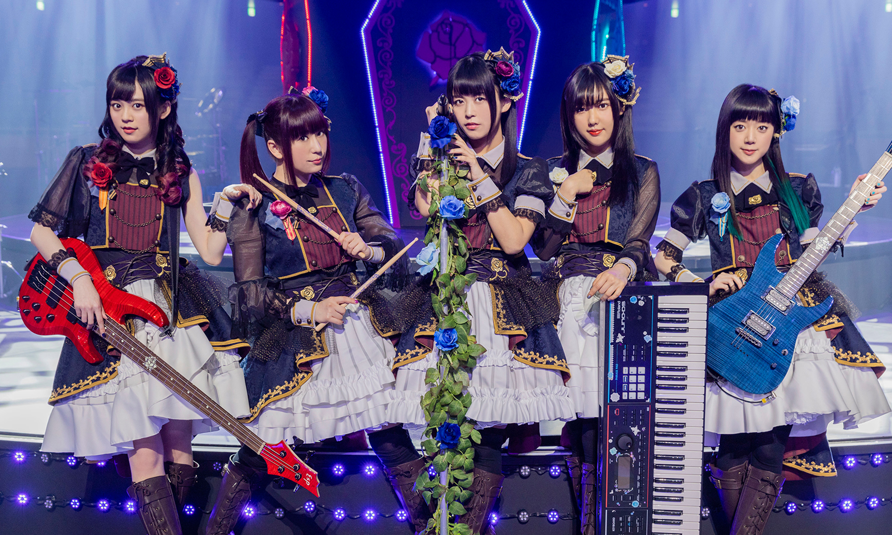
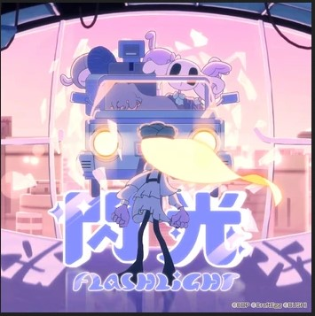

Characters, Cast and Instruments
In-fiction, Roselia are a passionate band with professional aspirations, driven largely by the ambition of their singer Yukina Minato. They recently were signed with a professional agency and are adjusting to the ways this has changed their experience as performers.
As a live band, Roselia were the second group to be revealed as part of the franchise. While Poppin'Party serves as the overall franchise "face", Roselia may be the most popular and successful group as a live musical act. They have performed at a range of Japanese music festivals as well as being able to sell out large solo concerts. Multiple members had at least some musical experience before being cast, particularly keyboardist Kanon Shizaki.
Characters, Cast and Instruments
- Vocals - Yukina Minato (Aina Aiba)
- Guitar - Sayo Hikawa (Haruka Kudo)
- Bass - Lisa Imai (Yuki Nakashima)
- Drums - Ako Udagawa (Megu Sakuragawa)
- Piano - Rinko Shirokane (Kanon Shizaki)
Roselia - Sample Tracks
